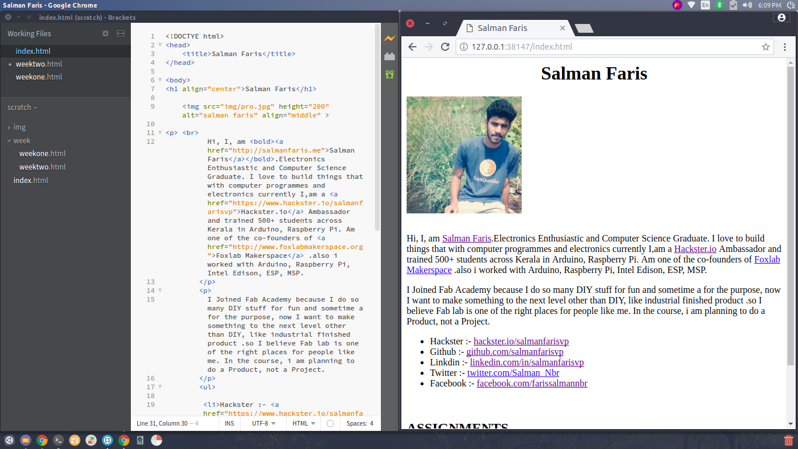

- Build a personal site describing you and your final project.
- Upload it to the class archive. Work through a git tutorial.
The fab documentation is fully based on git. I also as some experience with git version control system by sharing most of my open source project on GitHub. (github.com/salmanfarisvp)
Installing Ubuntu

My instructor told me to better to use any Linux distro, as of now I have experience in Raspbian(Raspberry + Debian) it's a Single board computer. anyway, i would like to learn new things so I installed Ubuntu 16.04 LTS version.
ubuntu is Debian based distro and managed by canonical limited, there is so many Linux based distro available like yocto, arch, Debian, mint...etc. I chose Ubuntu LTS because it has a huge community base, LTS means it gives Long Term Support like security patches.
my laptop has 500 GB hard-disk and 2 partitions, one is C that's have Windows os and another one D that's for storing my personal files.
i decided to install ubuntu by creating a new partition for Local Disk(D):that's for Windows OS and another for my personal file partition.
with the help of windows Disk management tool, we can simply shrink a volume of any drive.
and given how much amount we need to shrink from this drive . in ubuntu we need only 25 GB, I'll just give 100GB. because in the academy time I will be using the ubuntu so we need more space store our files.
after that, i downloaded the ubuntu 16.04 because that's the only version now have LTS (website: -https://www.ubuntu.com/)
i used Ethcher tool to burn the iso to USB. it's great simple open source tool by resin.io
After the burning the image, I turn-off the laptop and entered in boot menu (sorry, I can't take screenshot from there.)and choose boot from usb,and it's starting to install ubuntu after I selected appropriate drive (the free space that we are created ).
After the installation I force to restart my system, but after that system not booting the ubuntu os, automatically entering windows 10 . so I searched that, so found that I need to switch the ubuntu boot manager to get an option ubuntu or windows when system on, so I just restart computer and get back to the boot manager and changed the boot manager windows to ubuntu.
Setup Git

Git is verison control system for traking changes in computer file and coordinating work on those files among multiple people.
Git was created by Linus Torvalds in 2005 for development of the Linux Kernal.

This is a great example that shows how git works.
After the installation of Ubuntu I installed git by typing sudo apt-get install git on my linux terminal.
You can also check that you already installed git or not by typig git help on your terminal.

now we can confirm that we have installed git client successful on our Ubuntu machine.
Setup Gitlab and SSH
Gitlab is web-based Git Repository manager with wiki and issue tracking features.
In order to upload(push) our files to Gitlab Repository we need to setup our computer by Genarating SSH key.
SSH is provide a Private/Public key management System
First Genarate SSH key by typing SSH-keygen, on Terminal.
so we genarated our ssh key, next copy the c key from the file that we saved .
now sync with gitlab by pasting the ssh key to the gitlab
open gitlab account and open settings
Open SSH Panel
Paste your key here
Now Git and Gitlab was configured .
Build a Website
As a Computer Science Graduate I know little bit webpage development, I referenced so many themes and frameworks like bootstrap, Jekyll. but I decided to create from scratch .so started to develop.
HTML basic
HTML stands for Hyper Text Tarsnfer markup language , it's like a skeleton of webpage, but for design we use CSS-casecading style sheet.In every HTML page we need start with "HTML" tag. like that there lot's tag for repersenting each model example " for paragarph..
Text Editor
We need a text editor application for edition HTML document, we can use normal notepad, gedit.
Vim
Vim is a know as VIiMproved .it's fully based on text user interface .First i installed Vim by typing Sudo apt-get install vim by typing terminal.
we can open vim by typing vim 'filename', so here i open html file by typing vim fab.html
GNU Nano
Gnu nano is a text editor based on Command Line interface.
Visual Studio code
VS code is a Open Source editor developed by Microsoft
Brackets
brackets was developed by Adobe and it's completely free, we can download the Debian package from its website
Website lauch
In here I completely built my personal website from scratch. so I started with pure HTML . in future I will be added CSS and javascript to make look better.the first-week assignment is to sketch a project idea, I documented it on our personal site. I'll show how I did that.
In the git section, I just cloned my repo, so I saved HTML file in my repo directory.don't delete .git file it's stored all the imported file you need for git, so don't delete it.
that's why I love brackets, it has in-built preview, so no need to save and refresh each time.I learn most of the web development from codeacademy and I also take a course from udemy.after the website development, it's time to make our website live.actually, we need upload our website to the fablab repo, it's called push
first we need clone the old repo.
after the web page development, we need add the new items by typing git add --all
after the add we need commit by typing git commit -m "message here"
after the commit , we need upload to Gitlab by typing git push
Website Update
In week three i upadated my website with a responsive theme.